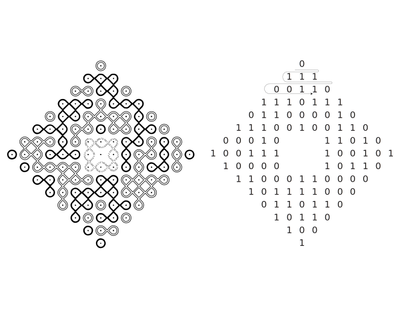
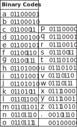

kolam.codes is an encryption tool made by Aarati Akkapeddi. View kolam.codes in spanish.
Kolam (in Tamil) or Muggu (Telugu) is a traditional art form from South India. Kolams are auspicious drawings on the floor (usually at the threshold of the home) using rice flour. Kolams are traditionally made by women and created before sunrise. They comprise mathematically complex patterns that feature continuous intertwined lines. The drawings are notably ephemeral. They are disturbed throughout the day by wind and footsteps or as insects consume the tiny grains of flour.
There are many variations of Kolam designs but there is one essential property: they must use continuous curves in which there are no breaks and the beginning and end-point are the same. Many Kolams also feature a grid of dots that follows the Fibonacci sequence. Not all Kolams are symmetrical but many use principles of recursion and repetition.
I developed a computer program that allows me to translate text into Kolam designs. I first started working with kolams because I wanted to translate my paternal grandmother’s name, Swarajyalaxmi into a kolam as part of my mourning ritual after her passing in 2022. kolam.codes is an extension of that work, allowing others to translate names or text of their choosing into kolam designs.
To encode text into Kolam designs, I first translate each character into an eight-digit binary code (made from only 0s and 1s). I then map this code onto my starting grid of dots (moving left to right and top to bottom). I use the center of the grid as extra space to work with a grid that may contain more dots than characters. Using this grid as a basis, the algorithm then fills in the sections with looping components, making sure to never connect dots associated with “0” to those associated with “1”.
key:
 For non-latin characters try: this online converter tool.
References/Further Readings: